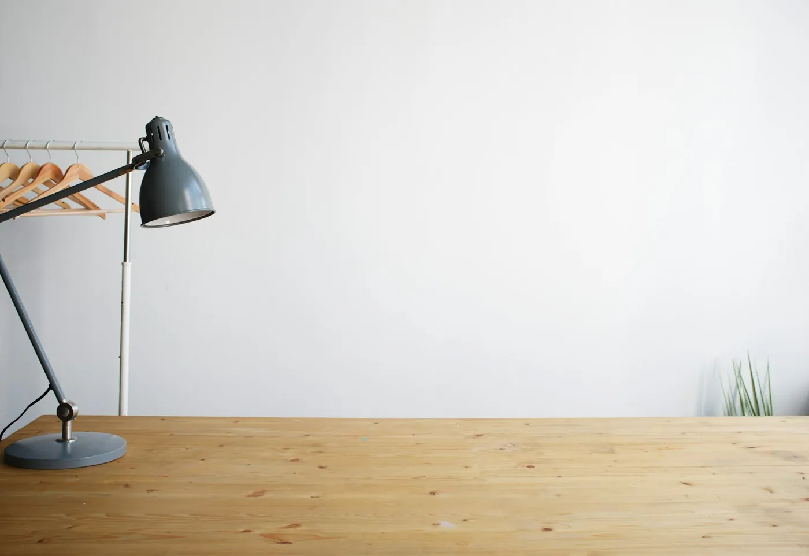

Forside/Om oss
Om Asker Oppmåling
Etablert i 1986, med 20 ansatte og sentral godkjenning i tiltaksklasse 3. Vi arbeider kun med oppmålingssaker.

Historien
Fra enkeltmannsforetak til aksjeselskap
Firmaet ble etablert av Rolf Myhre som et enkeltmannsforetak i 1986. 1. januar 1998 ble firmaet gjort om til et aksjeselskap.
I dag er vi et av de største firmaene i bransjen som kun arbeider med oppmålingssaker.
Godkjenninger
Kvalitet som kan dokumenteres
| Sentral godkjenning | Tiltaksklasse 3 – høyeste klasse. |
|---|---|
| Startbank | Medlem i bygg- og anleggsnæringens leverandørregister. |
| Etablert | 1986, aksjeselskap fra 1998. |
| Ansatte | 20. |
Vil du vite mer?
Ta kontakt for en samtale om oppdraget.